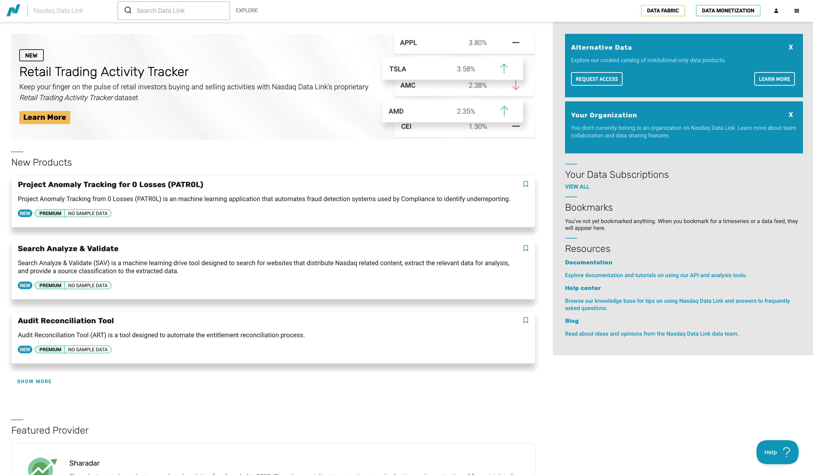
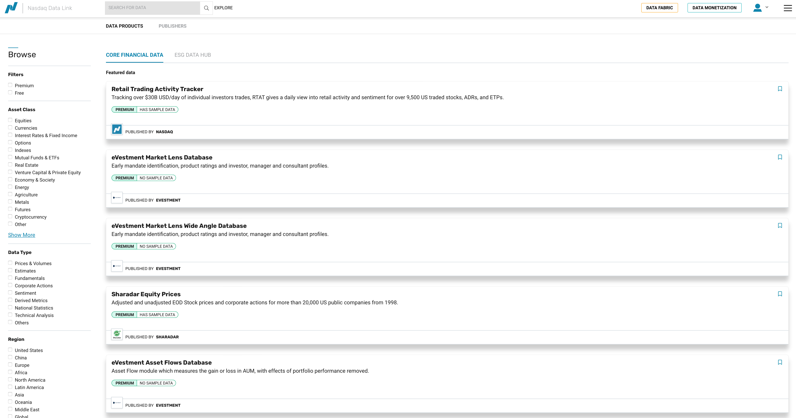
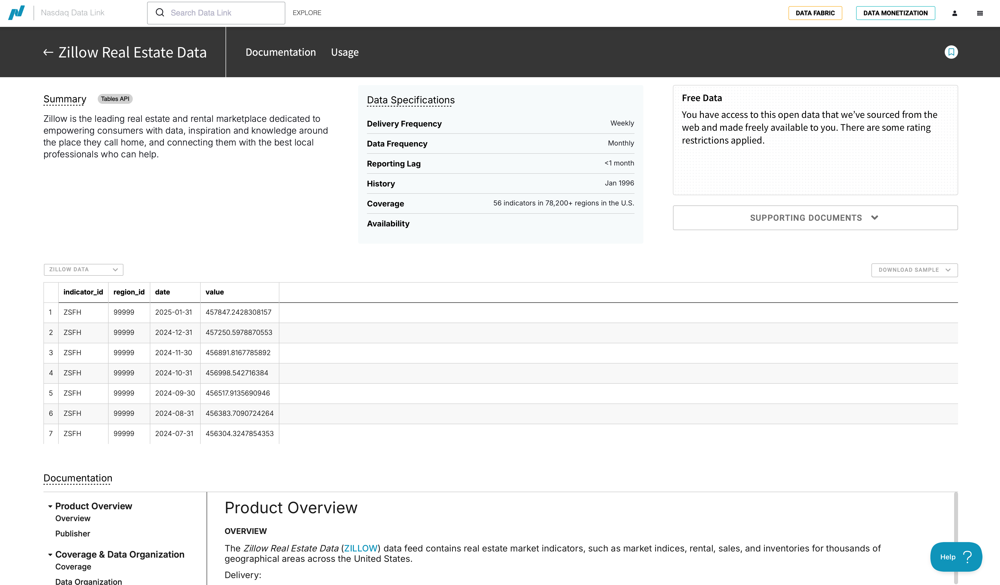
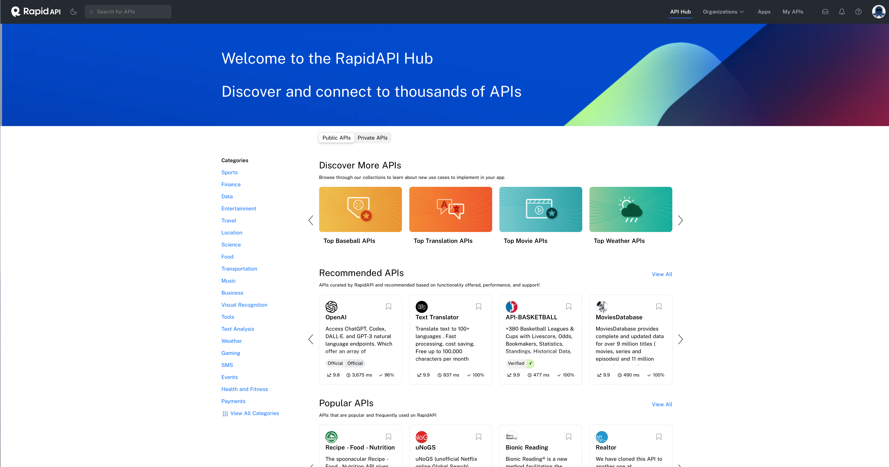
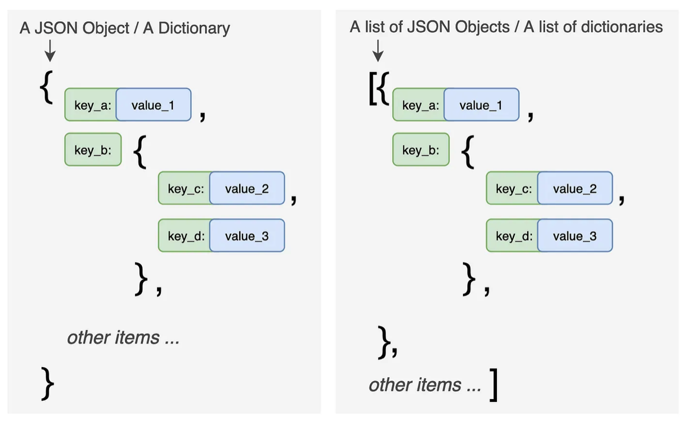

NASDAQ Data Link#
NASDAQ Data Link (formerly Quandl) provides access to a wide variety of financial and alternative datasets.
Getting Started#
Create an account at data.nasdaq.com/login - choose Academic if you’re a student
Set up two-factor authentication (Google Authenticator recommended)
Get your API key from data.nasdaq.com/account/profile
Store the key as a GitHub Secret (recommended) or in a
.envfile
Install the package:
pip install nasdaq-data-link

Fig. 42 NASDAQ Data Link homepage.#
Set-up#
import nasdaqdatalink
import os
from dotenv import load_dotenv
import numpy as np
import pandas as pd
import matplotlib.pyplot as plt
%matplotlib inline
# Load API key
load_dotenv()
NASDAQ_API_KEY = os.getenv('NASDAQ_DATA_LINK_API_KEY')
# Configure the API
nasdaqdatalink.ApiConfig.api_key = NASDAQ_API_KEY
Secure API Key Usage#
For GitHub Codespaces, use secrets:
# Recommended approach
import nasdaqdatalink as ndl
import os
NASDAQ_API_KEY = os.environ.get('NASDAQ')
ndl.ApiConfig.api_key = NASDAQ_API_KEY
Exploring Available Data#
Click EXPLORE on the main data page to see all available datasets. Much of the data is premium (paid), but you can filter for free data.

Fig. 43 Exploring NASDAQ data options.#
Example: Zillow Housing Data#
NASDAQ provides Zillow real estate data for free.

Fig. 44 Zillow housing data on NASDAQ.#
The data is organized into tables:
ZILLOW/DATA- The actual housing valuesZILLOW/REGIONS- Region identifiers and descriptionsZILLOW/INDICATORS- Indicator descriptions
Understanding the Data Structure#
Before downloading data, you need to understand what filters are available. Check the documentation for filtering options.
Exploring Regions#
Let’s first pull the regions table to understand what geographic areas are available.
regions = nasdaqdatalink.get_table('ZILLOW/REGIONS', paginate=True)
regions
| region_id | region_type | region | |
|---|---|---|---|
| None | |||
| 0 | 99999 | zip | 98847;WA;Wenatchee, WA;Leavenworth;Chelan County |
| 1 | 99998 | zip | 98846;WA;nan;Pateros;Okanogan County |
| 2 | 99997 | zip | 98845; WA; Wenatchee; Douglas County; Palisades |
| 3 | 99996 | zip | 98844;WA;nan;Oroville;Okanogan County |
| 4 | 99995 | zip | 98843;WA;Wenatchee, WA;Orondo;Douglas County |
| ... | ... | ... | ... |
| 89300 | 100000 | zip | 98848;WA;Moses Lake, WA;Quincy;Grant County |
| 89301 | 10000 | city | Bloomington;MD;nan;Garrett County |
| 89302 | 1000 | county | Echols County;GA;Valdosta, GA |
| 89303 | 100 | county | Bibb County;AL;Birmingham-Hoover, AL |
| 89304 | 10 | state | Colorado |
89305 rows × 3 columns
Note
The paginate=True parameter is important! Without it, you only get the first 10,000 rows. With pagination, the limit extends to 1,000,000 rows.
# Filter for just cities
cities = regions[regions.region_type == 'city']
cities
| region_id | region_type | region | |
|---|---|---|---|
| None | |||
| 10 | 9999 | city | Carrsville;VA;Virginia Beach-Norfolk-Newport N... |
| 20 | 9998 | city | Birchleaf;VA;nan;Dickenson County |
| 56 | 9994 | city | Wright;KS;Dodge City, KS;Ford County |
| 124 | 9987 | city | Weston;CT;Bridgeport-Stamford-Norwalk, CT;Fair... |
| 168 | 9980 | city | South Wilmington; IL; Chicago-Naperville-Elgin... |
| ... | ... | ... | ... |
| 89203 | 10010 | city | Atwood;KS;nan;Rawlins County |
| 89224 | 10008 | city | Bound Brook;NJ;New York-Newark-Jersey City, NY... |
| 89254 | 10005 | city | Chanute;KS;nan;Neosho County |
| 89290 | 10001 | city | Blountsville;AL;Birmingham-Hoover, AL;Blount C... |
| 89301 | 10000 | city | Bloomington;MD;nan;Garrett County |
28104 rows × 3 columns
cities.info()
<class 'pandas.DataFrame'>
Index: 28104 entries, 10 to 89301
Data columns (total 3 columns):
# Column Non-Null Count Dtype
--- ------ -------------- -----
0 region_id 28104 non-null str
1 region_type 28104 non-null str
2 region 28104 non-null str
dtypes: str(3)
memory usage: 878.2 KB
# Filter for counties
counties = regions[regions.region_type == 'county']
counties
| region_id | region_type | region | |
|---|---|---|---|
| None | |||
| 94 | 999 | county | Durham County;NC;Durham-Chapel Hill, NC |
| 169 | 998 | county | Duplin County;NC;nan |
| 246 | 997 | county | Dubois County;IN;Jasper, IN |
| 401 | 995 | county | Donley County;TX;nan |
| 589 | 993 | county | Dimmit County;TX;nan |
| ... | ... | ... | ... |
| 89069 | 1003 | county | Elmore County;AL;Montgomery, AL |
| 89120 | 1002 | county | Elbert County;GA;nan |
| 89204 | 1001 | county | Elbert County;CO;Denver-Aurora-Lakewood, CO |
| 89302 | 1000 | county | Echols County;GA;Valdosta, GA |
| 89303 | 100 | county | Bibb County;AL;Birmingham-Hoover, AL |
3097 rows × 3 columns
Finding Specific Regions#
You can search the text in a column to find specific regions. Let’s find all NC counties:
nc_counties = counties[counties['region'].str.contains(';NC')]
nc_counties
| region_id | region_type | region | |
|---|---|---|---|
| None | |||
| 94 | 999 | county | Durham County;NC;Durham-Chapel Hill, NC |
| 169 | 998 | county | Duplin County;NC;nan |
| 2683 | 962 | county | Craven County;NC;New Bern, NC |
| 4637 | 935 | county | Chowan County;NC;nan |
| 4972 | 93 | county | Ashe County;NC;nan |
| ... | ... | ... | ... |
| 87475 | 1180 | county | Martin County;NC;nan |
| 87821 | 1147 | county | Lenoir County;NC;Kinston, NC |
| 88578 | 1059 | county | Greene County;NC;nan |
| 88670 | 1049 | county | Graham County;NC;nan |
| 88823 | 1032 | county | Gaston County;NC;Charlotte-Concord-Gastonia, N... |
100 rows × 3 columns
nc_counties.info()
<class 'pandas.DataFrame'>
Index: 100 entries, 94 to 88823
Data columns (total 3 columns):
# Column Non-Null Count Dtype
--- ------ -------------- -----
0 region_id 100 non-null str
1 region_type 100 non-null str
2 region 100 non-null str
dtypes: str(3)
memory usage: 3.1 KB
There are 100 counties in NC, so this worked.
Downloading Housing Data#
Now we can use these region IDs to pull actual housing data. First, convert to a list:
nc_county_list = nc_counties['region_id'].to_list()
Now pull the data for a specific indicator. ZATT is one of the housing indicators.
Warning
Be careful with large downloads! They can exceed API limits and cause timeouts.
# Example: Pull NC county data (commented to avoid API calls during build)
# zillow_nc = nasdaqdatalink.get_table(
# 'ZILLOW/DATA',
# indicator_id='ZATT',
# paginate=True,
# region_id=nc_county_list,
# qopts={'columns': ['indicator_id', 'region_id', 'date', 'value']}
# )
# zillow_nc.head(25)
Exporting Data#
You can export to CSV for exploration in Excel:
# Export counties to CSV
counties.to_csv('counties.csv', index=True)
Using Rapid API#
Rapid API is a marketplace for thousands of APIs - markets, sports, weather, and more. Many have free tiers.

Fig. 45 Rapid API marketplace.#
REST APIs#
Most APIs on Rapid API are REST APIs - a standardized way for computers to communicate using standard data formats like JSON.
Learn more at the API Learn page.
Working with JSON Data#
API responses typically come in JSON format. Here’s how to handle them:
import requests
# Make API request
response = requests.get(url, headers=headers)
# Convert to JSON
data_json = response.json()
# Flatten nested JSON to DataFrame
df = pd.json_normalize(data=data_json)

Fig. 46 JSON structure - nested dictionaries and lists.#
For deeply nested JSON, use the record_path parameter:
# Flatten nested 'events' key
df = pd.json_normalize(data=data_json, record_path=['events'])
Data on Kaggle#
Kaggle is another great source for datasets. Search their datasets for finance-related data.
Examples:
Stock price histories
Economic indicators
Kaggle data is usually pre-cleaned for competitions, but you’ll still need to do some preparation work.